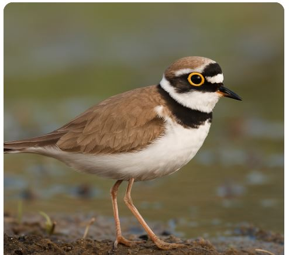

Yağmurcukkuşu
— Bir Dost
Dirmitin tulumbayla konuşurken çıkardığı ses midir yağmurcuk?
"Yağmurun sesiyle konuşurum ben, kimse duymasa da.
Toprak kokusu siner içime, annem gibi suskun.
Kuşlar uçar, ben beklerim; içimde biriken sözcüklerle.
Gökyüzü ağlarken, ben de büyürüm ümitlerle."

Yağmurcukkuşu, sıcak çöl havasında gökyüzünden süzülen yağmur gibi,
Düşlerimde uçuşur, rüzgarın melodisiyle dans eder.
Gözlerin deniz, derin ve huzurlu,
Derinlerinde kaybolurum bakışlarının, dalgalar gibi.
“Ben susunca yağmur başlar.”
“Kuşlar da ağlar mı anne?”
“İçimde bir yer var, orada hep rüzgar eser.”
“Beni anlayamazlar, şiirlerimi yırtıp, dövenler.”
“Kelimelerim var, ama kimseye söyleyemem, söylemem.”
“Dünya çok büyük, ben çok küçüğüm, içimde evrenler...”